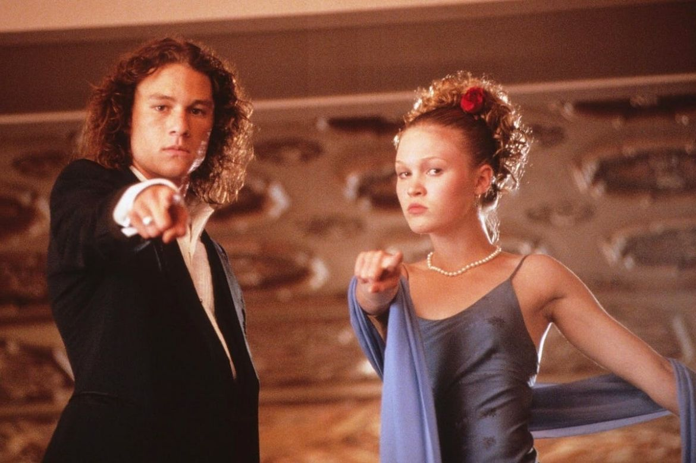
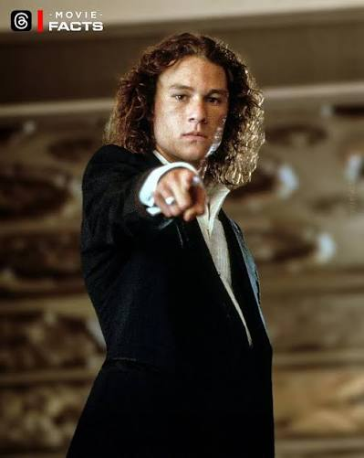
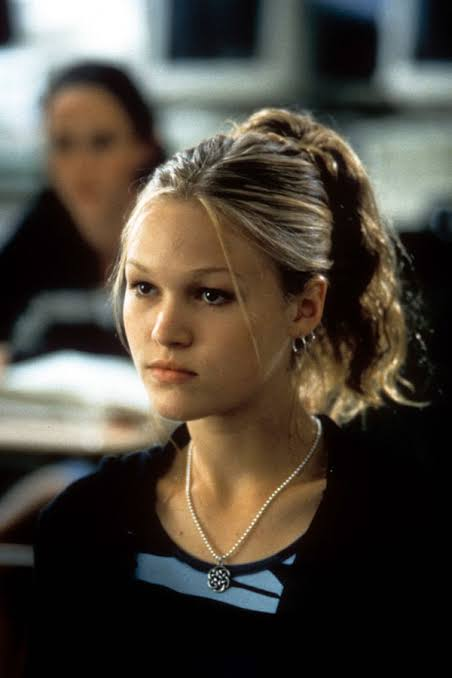
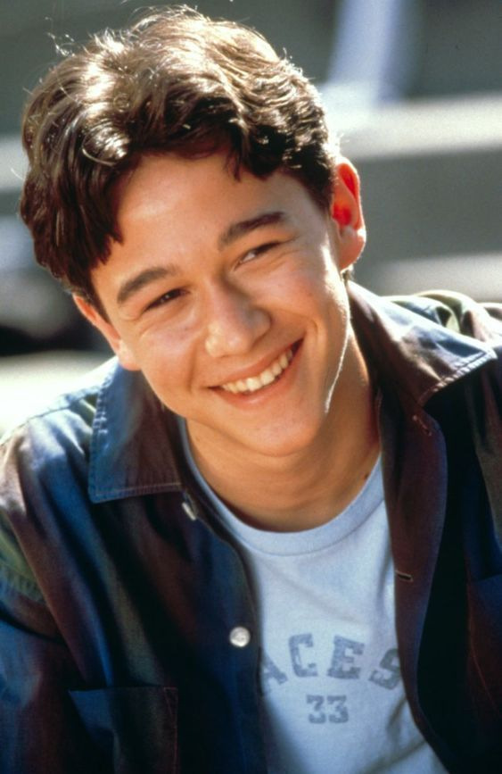
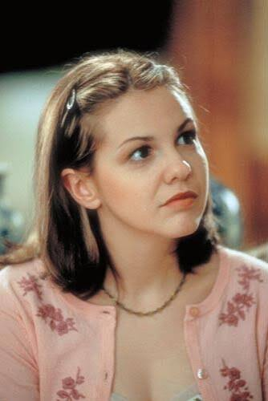
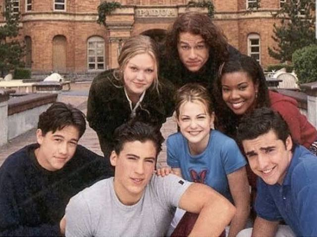
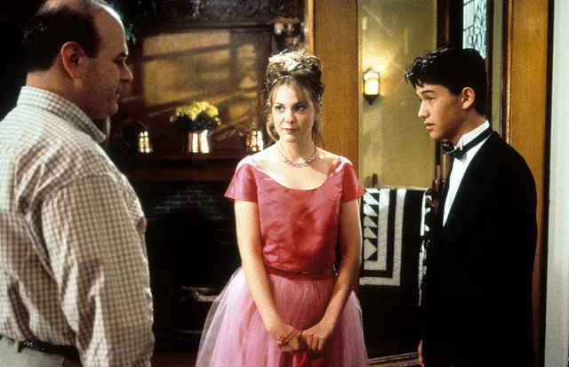

UM CLÁSSICO DOS ANOS 90

Bianca Stratford é uma adolescente que sonha em namorar, mas seu pai só permite que ela saia com alguém quando sua irmã mais velha, Kat, também começar a namorar.
Para resolver a situação, um plano é criado para que Kat saia com Patrick Verona, um garoto conhecido por seu jeito rebelde e misterioso. O que começa como um acordo acaba dando origem a sentimentos inesperados.

Patrick Verona
É o personagem que se aproxima de Kat e desenvolve com ela uma relação ao longo da história

Kat Stratford
É a irmã mais velha de Bianca e protagonista, conhecida por sua personalidade independente

Cameron James
É um estudante que se apaixona por Bianca e cria um plano para se aproximar del

Bianca Stratford
É a irmã mais nova de Kat e está no centro dos acontecimentos que dão início à história
O filme é inspirado na peça A Megera Domada,de William Shakespeare, adaptando a história para ocontexto de uma escola americana dos anos 1990.
10 Coisas que Eu Odeio em Você foi lançado em 1999 e ajudou a destacar Heath Ledger internacionalmente, antes de sua participação em grandes produções de Hollywood.
A música “Can’t Take My Eyes Off You”, cantada por Heath Ledger durante uma cena do filme, tornou-se uma das cenas mais lembradas da produção.
Deixe sua opinião sobre o filme:

